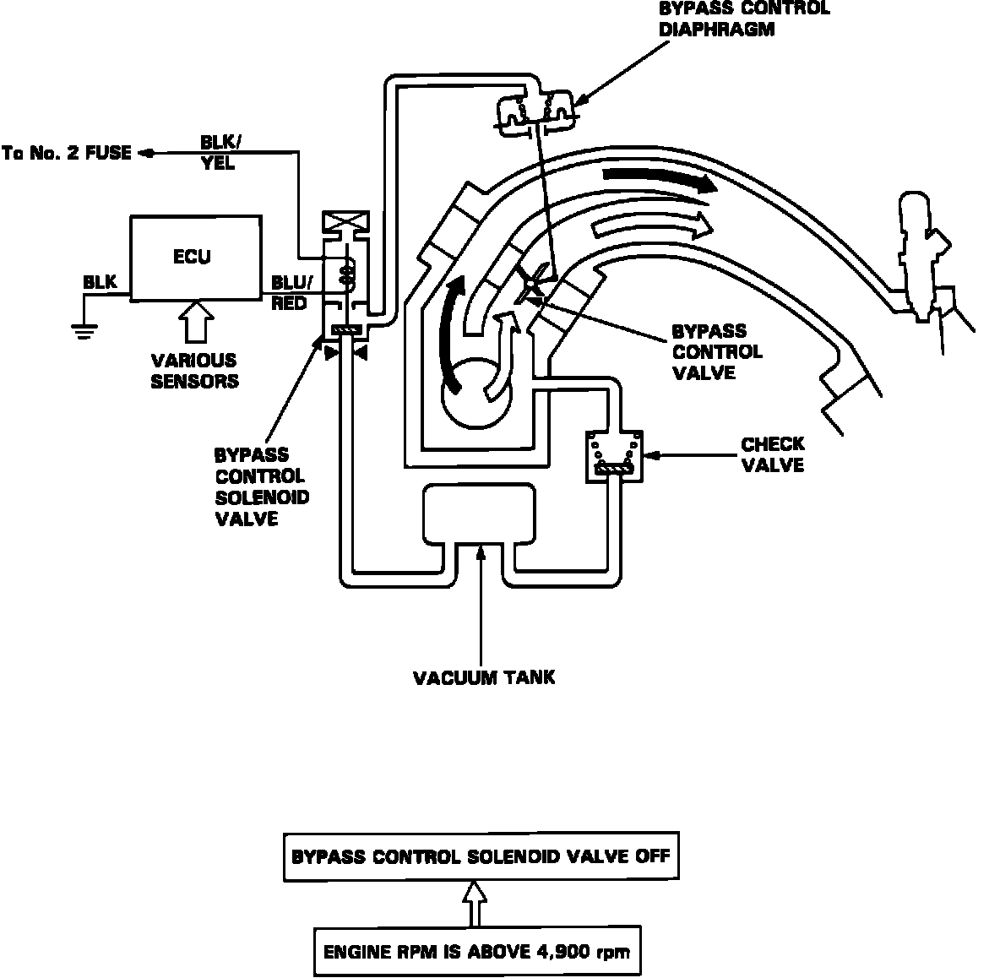

Variable Induction System: Locations
Intake Bypass Control System:

The intake manifold is designed with two intake paths, controlled by bypass valves, this allows for selection of the most favorable path for a given engine speed.
Increased performance is achieved by closing and opening the bypass valves. High torque at low RPM's is achieved when the valves are closed. High power at high RPM is achieved when the valves are opened. This selection is controlled by the PGM-FI ECU.